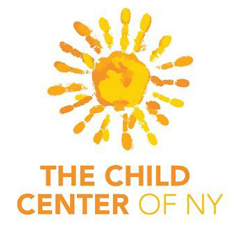

Hi! My name is Michael Jiang.
I'm a full stack software engineer based in New York City with a boundless desire to learn.

I'm a Full Stack Web Developer and I used to work as a mental health counselor.
I'm currently preparing to go back to school so I can obtain a BSc in Computer Science, allowing me to enter the artificial intelligence workforce.
This is my tech stack:


I'm also familiar with these tools and technologies:


I recently applied to  to obtain a computer science degree and better understand artificial intelligence.
to obtain a computer science degree and better understand artificial intelligence.
I began my software engineering journey at  .
.
Before that, I studied at  to get my Bachelor of Arts with a double major in Psychology and Sociology.
to get my Bachelor of Arts with a double major in Psychology and Sociology.
I stayed for another 2 years at Baruch to get my Master of Arts in Mental Health Counseling to become a therapist and also better understand myself!
I'm also a proud  alumni!
alumni!

- 


Click on one to see more!
Sanomind | Sound On, World Off
Frontend Web Developer, Intern
Sep 2020 - Current
✦ Developed a responsive landing page in 2 months on a 3-person dev team using Next.js, React.js, and custom CSS
✦ Utilized YouTrack for bug tracking and Amazon Web Services for site deployment
✦ Independently built out a static landing page using SCSS
✦ Attended daily stand-ups for progress updates, potential roadblocks, and task prioritization
The Child Center of New York
Master Social Worker / Therapist
Jul 2018 - Feb 2020
✦ Documented patient care info through Anasazi and Welligent electronic health record (EHR) systems
✦ Streamlined the transition of EHR systems by providing technical assistance, allowing our clinic to be the first to go live
✦ Contacted the Administration for Child Services, shelters, and other internal/external staff to promote constant communication
✦ Researched and participated in counseling workshops to learn new counseling modalities and be well-informed of the latest best practices
NYC Health + Hospitals | Elmhurst
Volunteer / Intern
Jan 2017 - Jun 2018
Child and Adolescent Unit
✦ Tutored children from age 5 to 18 in preparation for returning to school
✦ Utilized tutoring to examine underlying behaviors and thought patterns which could be used in assisting treatment
✦ Explored and developed creative solutions to help better understand patients (e.g. writing a movie script or drawing a house to reveal subconscious ideologies regarding sense of control and home life)
Adult and Medical Teaching Unit
✦ Facilitated up to 10 patients during group therapy to improve socialization
✦ Incorporated Chinese (Mandarin) to communicate with certain patients about mental health
✦ Engaged patients in board games to understand functioning level and thought processes
✦ Analyzed patient records using EPIC to improve patient care and reduce patient's duration of stay
Mathnasium: The Math Learning Center
Assistant Center Director / Instructor
Aug 2015 - Dec 2016
✦ Conversed with parents and relayed messages to management to ease the communication process
✦ Utilized Salesforce to track customer's billing and personal information
✦ Supervised and collaborated among a group of 8 other instructors


Click on one to see more!
Portfolio |
GitHub
Dec 2021
My portfolio website built from scratch using custom SCSS, HTML, and JavaScript
✦ Utilized a 7-1 file architecture for SCSS file organization and streamlined work flow
✦ Assessed and developed the website for mobile responsiveness by using CSS media queries and checking for breakpoints
✦ Deployed through AWS Amplify and used a custom domain name
Pet Date |
GitHub
YouTube
Jul 2020
Consolidates local adoption center and pets information to help ease the pet adoption process for users
✦ Implemented Faker gem to mock backend data and React Router to create a single page application
✦ Optimized the final product using helper methods to improve application efficiency and UX
✦ Experimented and replicated PetFinder API to create a Ruby-on-Rails back-end
✦ Incorporated LucidChart to architect wire frames, ERD, and component hierarchies prior to developing the application to accelerate the engineering process
✦ Designed and created my own site logo using Canva
Flat News |
GitHub (Frontend)
GitHub (Backend)
YouTube
Jun 2020
Engaged with a team member to create a website aimed at simplifying the browsing of news articles
✦ Utilized Ruby-on-Rails to create a back-end and persist user information, such as saving user's favorite articles
✦ Integrated News API to fetch the latest news in JSON data format
✦ Customized and formatted the data to create a minimalist design and present news based on selected categories
The FSE Board Game |
GitHub
YouTube
May 2020
The Flatiron School Experience Board Game - Collaborated with two team members to create a board game simulating experiences going through coding boot camp
✦ Developed a full stack application using Ruby on Rails for the back-end and JavaScript for the front-end
✦ Analyzed and streamlined the detailed game logic in order to design an interactive game-play for the end-user
✦ Started self-learning CSS more in-depth to design an aesthetic and smooth UI/UX
Beercraft |
GitHub
April 2020
Worked alongside a team member to create a one stop shop for all things home beer brewing related
✦ Devised both frontend and backend using Ruby-on-Rails and utilizing the MVC design pattern for organization
✦ Assembled an animated navigation bar and landing page button using custom CSS by analyzing external code samples
✦ Extracted and utilized information from TheCocktailDB API